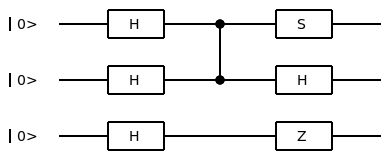

netsquid.qubits.qformalism
Definition of the available quantum state formalisms and functions that manipulate them.
A formalism is an implementation (subclass) of a quantum state representation (QRepr)
that is used to represent the quantum states (QState) shared by qubit objects (Qubit).
While we sometimes use the terms formalism and representation interchangeably,
the latter more broadly refers to representations of quantum states that are not fixed to a QState object.
The default formalism is KET.
Overview
When simulating a quantum state on a classical computer there are different ways to represent this quantum state and perform operations on it. In NetSquid these representations are implemented using five formalisms:
DMcorresponding to theDenseDMReprrepresentation,
SPARSEDMcorresponding to theSparseDMReprrepresentation,
When deciding on a formalism it is useful to know what the advantages and disadvantages are of each formalism.
Here is an overview to help you pick the right one.
DM |
SPARSEDM |
KET |
STAB |
GSLC |
|
|---|---|---|---|---|---|
Universal |
Yes |
Yes |
Yes |
No |
No |
Ensemble |
Yes |
Yes |
No |
No |
No |
Memory |
\(128 · 2^{2n}\) |
~ \(128 · 2^{n}\) |
\(128 · 2^{n}\) |
\(2n^2 + n\) |
\(\mathcal{O}(nd + n)\) |
Typical
max
#qubits
|
~10-15 |
~20-25 |
~20-25 |
>1000 |
>1000 |
Operating
complexity
|
\(\mathcal{O}(2^{3n})\) |
\(\mathcal{O}(2^{2n})\) |
\(\mathcal{O}(n)\) |
1-qubit gates: \({\scriptstyle \mathcal{O}(1)}\)
2-qubit gates: \({\scriptstyle \mathcal{O}(d^2 + 1)}\)
|
|
Meas.
complexity
|
\(\mathcal{O}(2^{3n})\) |
\(\mathcal{O}(2^{2n})\) |
\(\mathcal{O}(n^2)\) |
\(\mathcal{O}(d^2 + 1)\) |
Here \(n\) is the number of qubits in the quantum state. \(d\) is the average amount of edges per vertex in the graph state. With a minimum of \(d=0\), a maximum of \(d=n\) and an average of \(d=\mathcal{O}(\log(n))\).
Ket state vectors (KET) and density matrices (DM and SPARSEDM) are capable of universal quantum computing. Where density matrices also allow the simulation of mixed qubit states to simulate statistical ensembles or situations where the exact state is not known. The stabilizer tableau (STAB) and graph states with local Cliffords (GSLC) formalisms can only represent stabilizer states. These can be efficiently simulated classically, however they can not be used for universal quantum computing. In general GSLC is faster than STAB unless the state is highly entangled and thus contains a lot of edges in the GSLC graph.
In summary:
When dealing with ensembled quantum states and/or where noise should be applied/tracked as accurate as possible; then
DMorSPARSEDMis the best option.When doing universal quantum computing where noises can be approximated or don’t need to be tracked, then
KETis your best bet.When working with Stabilizer states; you have the choice between
STABandGSLC. GSLC is usually recommended unless working with highly entangled states where STAB shines a bit more.
The next sections will go more into technical details on each formalism. The state \(|\psi\rangle = \frac{1}{\sqrt{2}}(|00\rangle + i|11\rangle)|-\rangle\) is displayed at each formalism as example.
Ket state vector
For KET the probability amplitudes of the state \(|\psi\rangle\) is saved in a vector.
\(\begin{pmatrix} \frac{1}{2} \\ -\frac{1}{2} \\ 0 \\ 0 \\ 0 \\ 0 \\ \frac{1}{2}i \\ -\frac{1}{2}i \end{pmatrix}\)
Density matrix
DM stores the density matrix \(\rho = |\psi\rangle\langle\psi|\) as a dense matrix. SPARSEDM stores the density matrix as a sparse matrix in compressed sparse row format.
For a mixed state the density matrix is \(\rho = \sum\limits_{i=1}^m p_i|\psi_i\rangle\langle\psi_i|\) where \(|\psi_1\rangle, \dots, |\psi_m\rangle\) are the pure states with probabilities \(p_1, \dots, p_m\).
\(\rho = \begin{pmatrix} \frac{1}{4} & -\frac{1}{4} & 0 & 0 & 0 & 0 & -\frac{1}{4}i & \frac{1}{4}i \\ -\frac{1}{4} & \frac{1}{4} & 0 & 0 & 0 & 0 & \frac{1}{4}i & -\frac{1}{4}i \\ 0 & 0 & 0 & 0 & 0 & 0 & 0 & 0 \\ 0 & 0 & 0 & 0 & 0 & 0 & 0 & 0 \\ 0 & 0 & 0 & 0 & 0 & 0 & 0 & 0 \\ 0 & 0 & 0 & 0 & 0 & 0 & 0 & 0 \\ \frac{1}{4}i & -\frac{1}{4}i & 0 & 0 & 0 & 0 & \frac{1}{4} & -\frac{1}{4} \\ -\frac{1}{4}i & \frac{1}{4}i & 0 & 0 & 0 & 0 & -\frac{1}{4} & \frac{1}{4} \\ \end{pmatrix}\)
Stabilizer tableau
STAB is represented by the set of n generators that stabilizes \(|\psi\rangle\). A generator A stabilizes \(|\psi\rangle\) if \(A|\psi\rangle = |\psi\rangle\). Where \(A = (-1)^pA_1 \otimes \dots \otimes A_n\) with \(p \in \{0, 1\}\) and \(A_i \in \{I, X, Y, Z\}\), \(0 < i \leq n\).
These generators are saved in a stabilizer tableau: \(\begin{vmatrix}X & Z & P \\ \end{vmatrix} = \begin{vmatrix} x_{11} & \dots & x_{1n} & z_{11} & \dots & z_{1n} & p_1\\ \vdots & \ddots & \vdots & \vdots & \ddots & \vdots & \vdots\\ x_{n1} & \dots & x_{nn} & z_{n1} & \dots & z_{nn} & p_n\\ \end{vmatrix}\)
where \(p_j, x_{ij}, z_{ij} \in \{0, 1\}, 0 < i, j \leq n\)
This tableau represents the generators as \(\{(-1)^{p_j}\bigotimes\limits_{i=1}^nX^{x_{ij}}Z^{z_{ij}} | 0 < j \leq n\}\).
The example state \(|\psi\rangle = \frac{1}{\sqrt{2}}(|00\rangle + i|11\rangle)|-\rangle\) is stabilized by the three generators \(Y \otimes X \otimes I\), \(Z \otimes Z \otimes I\) and \(-I \otimes I \otimes X\).
With the corresponding stabilizer tableau being:
\(\begin{vmatrix} 1 & 1 & 0 & 1 & 0 & 0 & 0 \\ 0 & 0 & 0 & 1 & 1 & 0 & 0 \\ 0 & 0 & 1 & 0 & 0 & 0 & 1 \\ \end{vmatrix}\)
The tableau is not unique. It represents the same state when swapping rows or when adding rows together (modulo 2).
Graph states with local Cliffords
GSLC is represented by a set of edges E and a list of n single qubit Cliffords C such that
\(\bigotimes C \prod\limits_{(i, j) \in E} Z_{ij}|+\dots +\rangle = |\psi\rangle\)
where \(Z_{ij}\) indicates a controlled Z gate between qubits i and j.
For the example state \(|\psi\rangle = \frac{1}{\sqrt{2}}(|00\rangle + i|11\rangle)|-\rangle\) we have \(E = \{(0, 1)\}\) and \(C=\{S, H, Z\}\). This can be graphically represented in a graph as
digraph gslc { S [shape=circle]; H [shape=circle]; Z [shape=circle]; S -> H [arrowhead=none]; }Which corresponds to the circuit
{kind=link}
Adding new formalisms
To add new a formalism, one has to specify an implementation of the QRepr class.
This abstract base class defines the interface for a general quantum state representation.
Adding your own class to the QFormalism dictionary is optional.
If it is added it will automaticaly be evaluated by the available formalism unit tests.
Finally, conversion methods can be added by using register_conversion().
- class netsquid.qubits.qformalism.QFormalism
Bases:
objectCollection of the available quantum state formalisms.
Can be extended with additional formalism attributes beyond the ones available by default.
- KET
Quantum state formalism using pure ket vector states. Supports universal quantum computation. This is the default formalism.
- Type:
- DM
Quantum state formalism using ensemble density matrix states represented by dense matrices. Supports universal quantum computation. Density matrices are versatile in terms of quantum operations, but scale worse in terms of memory and computation speed than ket vectors.
- Type:
- SPARSEDM
Quantum state formalism using ensemble density matrix states represented by sparse matrices (compressed sparse row format). Supports universal quantum computation. The sparse matrix representation scales better in terms of memory usage than the dense matrix representation of the DM formalism, and better or worse in terms of computation speed depending on the whether the state is very large or not.
- Type:
- STAB
Quantum state formalism using pure stabilizer states. Is limited to Clifford gate operations, and does thereby not support universal quantum computation. Stabilizer states have very efficient memory scaling, and can be used to simulate thousands of entangled qubits.
- Type:
- GSLC
Quantum state formalism using Graph States with Local Cliffords. GSLC is limited to Clifford gate operations, and does thereby not support universal quantum computation. GSLC states have very efficient memory scaling: \(O(nd)\). With \(n\) the amount of qubits, and \(d\) the amount of edges in the graph. Usually \(d = O(log(n))\). Can be used to simulate thousands of entangled qubits.
- Type:
- universal_formalisms
All formalisms that support universal quantum computation.
- Type:
tuple of
QRepr
Examples
Formalisms can accessed as attributes:
>>> from netsquid.qubits.qformalism import QFormalism >>> print(QFormalism.KET) <class 'netsquid.qubits.kettools.KetRepr'>
It’s possible to iterate over all formalisms:
>>> for formalism in QFormalism: ... print(formalism) <class 'netsquid.qubits.dmtools.DenseDMRepr'> <class 'netsquid.qubits.gslctools.GSLCRepr'> <class 'netsquid.qubits.kettools.KetRepr'> <class 'netsquid.qubits.sparsedmtools.SparseDMRepr'> <class 'netsquid.qubits.stabtools.StabRepr'>
To add an extra formalism called
MyQRepryou can do>>> QFormalism["MYREPR"] = MyQRepr >>> QFormalism.MYREPR <class 'MyQRepr'>
To remove a formalism you can do
>>> del QFormalism["MYREPR"] >>> hasattr(QFormalism, "MYREPR") False
- DM
alias of
DenseDMRepr
- SPARSEDM
alias of
SparseDMRepr
- netsquid.qubits.qformalism.set_qstate_formalism(formalism: Type[QRepr]) None
Set the quantum state formalism to use.
- Parameters:
formalism (
QRepr) – Representation to use for the quantum state formalism.- Raises:
TypeError – If the specified formalism is not known.
Example
>>> from netsquid.qubits.qformalism import QFormalism, set_qstate_formalism ... >>> set_qstate_formalism(QFormalism.STAB)
- netsquid.qubits.qformalism.get_qstate_formalism() Type[QRepr]
Get the current representation being used for the quantum state formalism.
- Returns:
Representation currently in use as the quantum state formalism.
- Return type:
- netsquid.qubits.qformalism.convert_qstate(qubit: Qubit, formalism: Type[QRepr] | None = None)
Convert the (shared) quantum state of a qubit to another formalism.
Any other qubits sharing this quantum state will also have their quantum state converted.
- Parameters:
qubit (
Qubit) – Qubit that holding the (shared) quantum state to be converted.formalism (
QFormalismor None, optional) – Formalism to convert the quantum state to. If None (default), the currently set formalism is used (recommended).
- Raises:
NotImplementedError – If the necessary conversion has not been implemented e.g. conversion to a general stabilizer state.
Notes
If the qubit is not holding a quantum state (None) or its quantum state already matches the specified formalism, then nothing is done.
When converting from an ensemble formalism to a pure state formalism a state is sampled if necessary.
- netsquid.qubits.qformalism.convert_qrepr(qrepr: QRepr, formalism: Type[QRepr] | None = None) QRepr
Convert a quantum state representation to another representation formalism.
A representation differed from a
QStatein that it has no relation toQubitobjects, it simply describes a state. A representation can be used to create a shared quantum states for a given formalism.